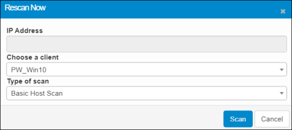
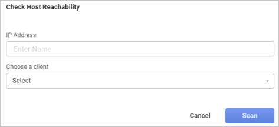
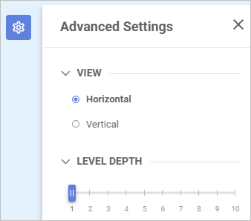
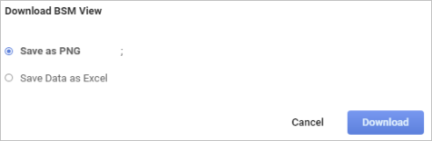

Business Service Map
Use the
The following lists the available views.
The following actions can be performed in this window.
Type. Click the drop-down list and select the type of view to display.
Rescan. When selected. displays the Rescan Now dialog box. Choose a Client and the Type of Scan. Then click Scan.

Host Check. When selected, displays the Check Host Reachability dialog box. Enter the IP Address and Choose a client, then click Scan.

Advanced Settings. When selected, displays a new window for selecting the direction of the view (horizontal or vertical) and the number of levels you want to display.

Minimize and Maximize. Toggles between making the screen full screen or normal view.
Load View. When selected, loads any saved views.
Save View. When selected, saves the current view, which can be reloaded for reference at another time.
Download BSM. When selected, displays the Download BSM View dialog box in which you specify what type of file to download. Click either Save as PNG (image) or Save Data as Excel (spreadsheet), then click Download.
| There must be data in order for the download to occur. |

Show/Hide Legends. Toggles between showing and hiding the onscreen data legends.
Zoom. Changes the size of the data view when moving the slider. Use the plus + and minus - signs to change the slider location.